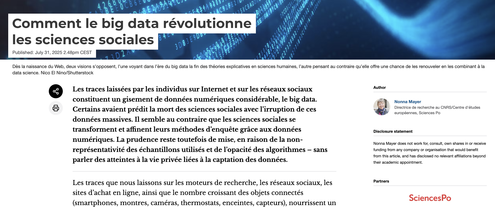
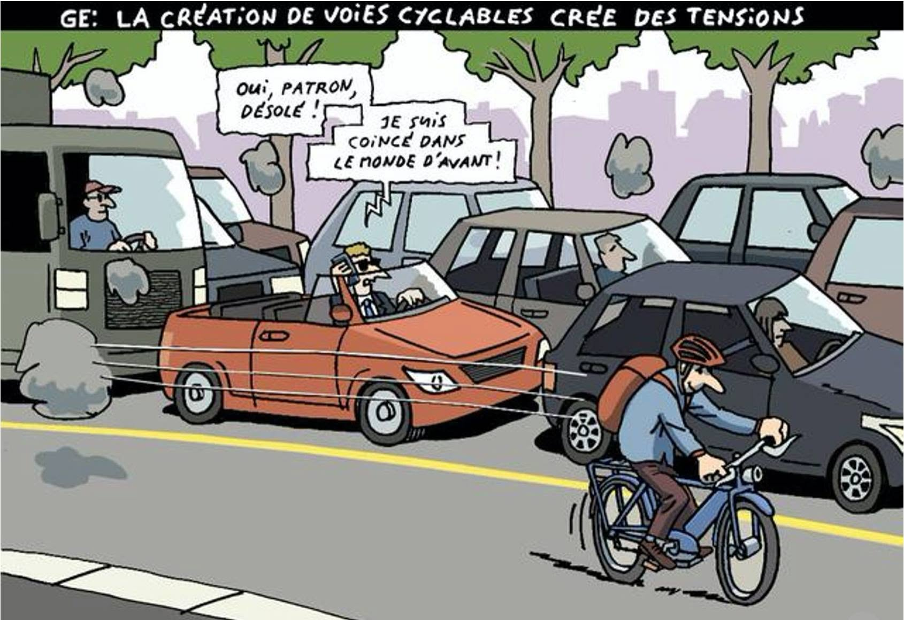

Exploration des savoirs
La place des données dans l’enquête
Objectifs de la séance
- Aquérir une définition large de ce qu’est une donnée
- Savoir illustrer la variété des données existantes
- Situer la place des données dans l’enquête
- Distinguer données, méthode d’analyse, et outil
- Concevoir un corpus
Une deuxième séance sur les méthodes d’analyse
Quelques mots sur l’enquête
Une pratique diversifiée
Détectives, journalistes, chercheurs, … Qui mène des enquêtes ?
Le point commun: démarche progressive d’établissement du sens (sous certaines règles)
Comment définir ce qu’est une enquête ?
L’enquête scientifique
Différentes étapes assez similaires suivant les domaines
- Identification d’une nouvelle question en lien avec ce qu’on sait (la littérature)
- Exploration & Problématisation
- Opérations de connaissance : observations, expériences, etc.
- Analyse des résultats
(itérations)
- Mise en discussion
- Restitution & diffusion
Pourquoi a-t-on besoin de données ?

La place des données dans …
Dans l’espace public
Omniprésentes avec une réthorique de la promesse

Dans les sciences sociales
Des formes plus spécifiques de données. Quelles sont les données habituelles que vous avez rencontré en science sociale ?
(A la fois des exemples précis et le type général)
- …
- …
Plus généralement …
Lister les différentes formes de données qui existent:
- …
- …
Peut-on utiliser ces données en sciences sociales ?
Dans quelles conditions ce serait intéressant d’utiliser les données suivantes dans une enquête en sciences sociales ? Quelles sont les difficultés que vous identifierez ?
- Une collection de cartes d’une ville dessinées à différentes époques pendant 200 ans
- Un capteur d’éclairage au bord d’une route
- Le nombre de connexion à un site web
- …
échapper la dichotomie quanti/quali
Un courant de sciences sociales
Les approches dites “computationnelles”

Mais plus généralement une terminologie

Des spécialités “régionales” de données
- Chaque domaine/secteur a ses données & ses règles
- Histoire/Physique/Biologie
- Procès/Journalistes/…
- Dans l’enquête interdisciplinaire
- Déborder les délimitations habituelles
- Relier des pratiques différentes
- Se nourrir de la diversité
Importance de forger un vocabulaire commun.
C’est quoi une donnée au final ?
Définition générique : un ensemble d’informations issues par différentes transformations de traces laissées par un phénomène1.
- définition a-disciplinaire
- importance du lien avec un phénomène
- la donnée n’est pas le phénomène
- des étapes intermédiaires
- nature de la “trace” recueillie : comment ? quoi ?
Un processus plus qu’un moment spécifique
Les données se transforment en permanence. Est-ce qu’il y a vraiment des données brutes ?

Où se situent les données dans l’enquête ?
Déduction
Theory-driven : Théorie → hypothèse → données
Les données mettent à l’épreuve une hypothèse formulée en amont
Induction
Data-driven Données → régularités → théorie
Les résultats sont censés émerger des données
Abduction
Itératif Données ⇄ concepts
Allers-retours entre observations surprenantes et hypothèses
Enquêtons : notre fil rouge
L’enquête ancrée pour dépasser les stéréotypes

Quelles sont les données possibles ?
Pour enquêter sur les cohabitations des mobilités autour du bâtiment (donc situé).
- …
- …
- …
Quoi faire avec ces données ?
Comment faire pour passer à la pratique.
- Toutes ces données se valent-elles ?
- À quel moment ces données vont intervenir ?
- Quelles sont les difficultés à anticiper ?
Articulation données/enquête
Trois principaux usages
Différents moments dans l’enquête:
- Exploratoire/découverte : diversifier son rapport au monde
- Argumentation/justification : solifier un argument
- Illustration/communication : faciliter la transmission
Pour les données précédentes, à quels moments faire intervenir ?
Un processus itératif
- Le lien entre question & données n’est jamais immédiat
- Processus itératif d’opérationalisation :
- Certaines données amènent à des questions
- Certaines questions amènent à chercher des données
- Mais
- Certaines données n’existent pas…
Il faut souvent accepter une certaine forme d’insatisfaction.
Se méfier du mythe du processus linéaire

Est-ce que toutes ces données se valent ?
- Nature différentes
- Existance
- Accessibilité
- Taille
- Qualité
- Coût
- Confidentialité
Face à cette diversité
Des savoirs spécifiques aux données - data management
- Comment choisir les données les plus pertinentes ?
- Comment les manipuler et les stocker ?
- Comment passer des données à des résultats ?
Les données : le point de départ

L’analyse dans tout ça ?
Données > Transformation > Analyse > Résultats
Les données sont un moyen et prennent place dans un processus d’analyse.
- Des spécialisation sur les données
- Des méthodes de traitement spécifiques aux données
- Des outils différents (image, son, etc.)
Constituer ses données
Corpus
corpus = ensemble de données rassemblée suivant une cohérence.
Pourquoi ?
- Décrire un ensemble d’éléments comme un tout
- Situer des éléments par rapport à d’autres dans leur diversité
Pratiques du vélo
Une donnée : un entretien avec un cycliste
Un corpus : des entretiens avec tous les cyclistes qui ont accepté de répondre à mes questions un samedi soir rue Rivoli
Qui dit corpus dit…
- Un ensemble d’où vient le corpus : une population de référence
- Une partie d’une population : un échantillon
- Un processus de sélection qu’il faut renseigner
Produire vs. réutiliser des données
- Données primaires
- construire ses données/corpus
- un gradient allant de la production complète à la mise en forme
- Données secondaires
- données déjà constituées
- permet d’explorer en amont de l’enquête
- multiplication des données disponibles open data
- Entre les deux : l’explosion des traces numériques
- accès à des bases de données/API
Conséquences de la disponibilité
- Données primaires : possible de les adapter à sa question mais vulnérabilité du protocole
- Données secondaires : répondent souvent à une autre question que la votre
Vélo & Justice
- Les données de comptage des vélos à Paris produits par la ville
- Compter moi-même les vélos dans une rue
La forme compte : quels formats ?
Les données ont une forme matérielle qui va poser plus ou moins de difficultés
- Données décomposées :
- structurées (tableaux)
- non structuré (zip de pdf)
- Données agrégées
- Tableaux déjà calculés
- Graphiques
Conséquences sur le traitement et ce qu’on peut en faire.
Une pragmatique des données
De nombreux arbitrages
- Balance coût / avantage de l’accès à des données
- Adéquation avec les objets de la question
- Adéquation avec la nature de la question
- Facilité de retransformer les données
- Disponibilités des méthodes d’analyse pour obtenir un résultat
Difficulté d’accès aux données
- Le coût des données :
- ces données peuvent déjà exister 👍
- peuvent être collectées avec un effort raisonnable 💪
- sont couteuses à récolter 👎
Des choix à faire
- Réaliser ma propre enquête par questionnaire, avec mes questions spécifiques
- Utiliser les données publiques disponibles à l’échelle des villes
Volume des données
- Le volume des données n’est pas l’élément le plus important
- Adéquation avec la question
Ne pas hésiter à restreindre la taille et privilégier l’adéquation
Qualité des données
Toutes les données ne se valent pas : une qualité multidimensionnelle.
- Tracabilité de la chaine de production
- Fiabilités (producteurs douteux, ou au contraire légitime)
- Données manquantes (est-ce qu’il manque des élément)
- Erreurs dans le corpus
- Ouverture versus fermeture de l’accès
- …
La représentativité
Avoir beaucoup de données ≠ avoir des données représentatives
Un corpus est représentatif lorsqu’il reproduit, sur les dimensions pertinentes pour l’enquête, la structure d’une population de référence.
Toujours se demander : représentatif de quoi ? et sur quelles dimensions ?
Postulée
Affirmée sans vérification (fréquent, fragile)
Contrôlée
Comparée à une source externe (recensement, registre…)
Discutée
Biais identifiés et effets sur les résultats explicités
Ces corpus sont-ils représentatifs ?
- Si je vous interroge sur votre consommation de séries, est-ce que c’est représentatif de la population française ?
- Des étudiants français ?
- Si je prends toutes les photos prises par les touristes d’un monument est-ce que je peux identifier la diversité des points de vue du bâtiment ?
- Si je prends tous les articles parus sur une semaine sur la question du vélo à Paris, est-ce que c’est représentatif de l’avis des français sur la question ?
- De la production journalistique ?
Vérifier la représentativité : spécificités
Les stratégies de représentativité dépendent des domaines. Pour les mesures numériques sur des populations, des méthodes sont formalisées en statistique.
Une règle générique : Définir l’entité (population, grandeur, etc.) à représenter et le passage du corpus à cette entité.
Comment faire en pratique ?
- Entre méthodes & bricolage
- Important de justifier/mettre en discussion.
Avec quelles données commencer
Des données “accessibles”
- Toute enquête se pose la question:
- De l’espace public
- De la production des connaissances
- Avec quelques manières de les utiliser
- Ce point sera traité dans une séance ultérieure plus en détail
Il n’y a pas vraiment de limites, n’hésitez pas à être créatifs
Documenter l’espace public : la presse
L’article de presse comme contenu complexe :
- date (évolution temporelle)
- contenu textuel (sujets)
- cadre : journal, journaliste, …
Permet une diversité d’approches :
- l’article individuel comme source
- corpus d’articles sur un sujet/période
- thèmes abordés
- acteurs récurrents
- évolutions temporelles
Exemple d’analyse de la presse

Accès captifs
Une presse sous droit d’auteur.
- Par des outils dédiés comme Gallicagram
- Par l’interface de portails comme Europresse
- Certains médias sont libres
Cadrage d’une tendance

Construire et extraire un corpus d’Europresse
Accès Europresse à des données payantes
Vélo & Justice
Comment aborde-t-on la question des inégalités quand on parle du vélo en région parisienne ?
Le contour du corpus :
- Définir la période
- Définir les mots-clés
- Définir les journaux concernés
- Se concentrer sur un journal
- Sur un bouquet?
Construire des requêtes
- Chaque interface est organisé avec des règles
- Lire les résultats
- Ne pas hésiter à combiner les éléments
- Viser un nombre réaliste de résultats
Consulter vs. conserver
Possibilité de consulter sur Europresse. Mais comment conserver ?
- Collecter à la main vs. télécharger
- Des transformations nécessaires
Puis aller vers l’analyse :
- Descriptive : compter
- Plus avancée
- Visualisations
Statut des données
Ce sont des données sous droit d’auteur. Leur usage est très réglementé. Il y a une tolérance pour la recherche mais il est interdit des diffuser.

Mettre en forme les données
- Délimiter le corpus
- Téléchargement sous un format HTML
- Gérer la limite
- Des fichiers HTML à dater + un document de métadonnées
- Transformer en un document tabulaire
Étendre le domaine de la presse
Europresse n’est pas le seul portail sur lequel collecter des données.
Suivant la question :
- se concentrer sur les articles parus sur un site spécifique spécialisé
- récupérer les newsletters d’une organisation
Statut des données
Récupérer les évènements de la FUB pour voir lesquels mentionnent la question de la justive : https://www.fub.fr/fub/actualites
La difficile question des médias sociaux
- Une source riche d’échanges
- Mais de plus en plus fermés (Twitter, Insta, etc.)
- Difficulté de collecter massiviement
- Possibilités de constituer des petits corpus
Les productions scientifiques
- Depuis plus de 50 ans, des bases de méta-données
- L’étude de ces publications scientifiques permet :
- De suivre l’évolution des thèmes
- D’identifier les acteurs clés du monde scientifique
- De reconstituer les communautés
Des corpus déjà existants
Statistiques publiques
L’INSEE rend disponible de nombreuses données
- Notamment Catalogue des données de l’INSEE
- Agrégées et à différents niveaux spatial (ville, IRIS)
(ça vaut le coup de creuser un peu)
Vélo & Justice
- voir la structure des données
- jeter un coup d’oeil sur les données
Que faire avec ces données
- Distributions nationales :
- répartitions géographiques
- recalculer des statistiques pour des échnatillons
- faire des cartes
- Recours à des logiciels statistiques
- Excel, Jamovi
- R, Python
Avant de faire de l’analyse
Prendre le temps de regarder les données et réfléchir en amont sur les traitements envisagés
Documenter les attitudes & pratiques : les sondages
Que pensent les individus ? Que disent-ils de leurs pratiques ?
- Les sondages sont devenus une source importante de connaisance des comportements sociaux
- Des producteurs très différents (Chercheurs, associations, …)
- De plus en plus de données disponibles
- Recherche : https://data.progedo.fr/
- Autres acteurs : par exemple https://opendata.parlons-velo.fr/
Entrepots de données

Une diversité d’autres sources
Avoir une conception ouverte de ce qui peut constituer une donnée utile
S’adapter au corpus
- une structure/des contenus très variables
- une qualité variable
- ne jamais hésiter à explorer
Vélo & Justice
Statistiques de subventions d’achat de vélo en Île-de-France
- Distribution par villes
- A rapporter aux données INSEE ?
Collecter vos propres données : cas des entretiens
Créer de nouvelles données
Des raisons de produire ses propres données : absence de données secondaires, spécificités de l’objet ou de la question, …
Chaque type de données a généralement sa méthdologie de production, et prend place dans un protocole à déterminer.
Importance du protocole
- Identifier clairement le rôle des données dans votre question
- Notamment les résultats que vous attendez
- Clarifier la population ciblée & les critères de représentativité
- Identifier les risques
- Que se passe-t-il si vous n’arrivez pas à tout collecter ?
Vélo & Justice
Je veux m’intéresser aux images du vélo dans les films. Comment je construits la population de films (uniquement ceux qui le mentionne dans le résumé ? un échantillon aléatoire ?) ? Comment ensuite je code pour chaque film (je me limite au résumé de manière automatique ? Je les regarde ?)
Le cas des entretiens
Un goût prononcé des sciences sociales pour l’entretien
- Force exploratoire : diversifier les points de vue et les perspectives
- Force illustrative : donner accès au terrain
Penser les entretiens dans la perspective d’un corpus - ce n’est pas un micro-trottoire.
Définir un protocole
Définir le dispositif de collecte
- Quel est le corpus (qui va être interrogé)
- Comment va se passer la collecte (accès à la personne, conduite de l’entretien)
- Comment transformer les données brutes (l’audio) en données plus spécifiques
- Retranscription ?
- Annotation d’éléments ?
- Que se passe-t-il s’il manque un entretien ?
En pratique
Après : l’enregistement/retranscription est une “trace” qu’il faut mettre en forme
- Mettre les entretiens dans un format unifié
- .docx au mieux
- Nommer les fichiers de manière systématique
- Avoir un fichier avec les métadonnées (date, interlocuteur)
- Transformer les données :
- Coder des éléments spécifiques des entretiens dans un fichier
Gestion concrète des données
Et comment on fait en fait ?
- Comment bien collecter et conserver les données ?
- Où les stocker ?
- Comment travailler collaborativement avec des données ?
Bonnes pratiques numériques
- Collecter et conserver les données brutes
- Documenter le contenu dans des métadonnées
- Documenter chacune des transformations
- Consolider un corpus nettoyé avant l’analyse
Dans l’idéal, aller vers la reproductibilité
Documenter documenter documenter
Journal collectif des traitements

Format et stockage des données
- Simplifier le plus possible
- .txt, .csv, …
- Faire attention à la confidentialité
- Anonymisation/pseudonymisation
- Noms clairs
- Dater les fichiers
- Système de dossier clair
Transformer et nettoyer ses données
- Conserver les données brutes
- Mettre ensuite en forme les données pour faciliter les analyses
- Gérer les problèmes (valeurs nulles, etc.)
Bonne pratique : garder une trace des modifications

Sensibilité des données
- Limiter les données identifiantes
- Consentement et autorisation

L’importance de décrire les données

Décrire les données dans ses travaux
Dans les travaux :
- Préciser la manière dont ont été constituées les données et.ou les sources
- Pour chaque corpus
- Donner des informations descriptives sur le contenu
- Les transformations qui ont été faites
- Ex. les filtrages
- Préciser les limitations s’il y en
- Données manquantes
- Artefacts/problèmes
En guise de conclusion (temporaire)
Données & enquête
- Avoir une conception ouverte des données pour enrichir l’enquête
- Situer les données au sein de corpus et en lien avec des phénomènes spécifiques
- Existence de nombreuses données réutilisables
- Des bonnes pratiques transversales
- Des spécificités (méthodes, outils) suivant le type de données
Aller vers l’analyse
Pour aller aux résultats : des méthodes & des outils
Trois approches :
- “génériques” : appliquer des méthodes directement sur les données (Excel, codage manuel, …)
- “logiciels” : mobiliser des logiciels qui implémentent les méthodes plus ou moins automatisés (Iramuteq, VosViewer, Jamovi, Qualcoder, …)
- “programmation” : automatiser les traitements avec la programmation (Python, R)
La place grandissante de l’IA
- Délégation grandissante à des outils agentiques/génératifs
- Ne remplace pas les aspects discutés aujourd’hui
- Importance de garder l’humain dans la boucle
Comment évolue la cohabitation des mobilités à Paris ?